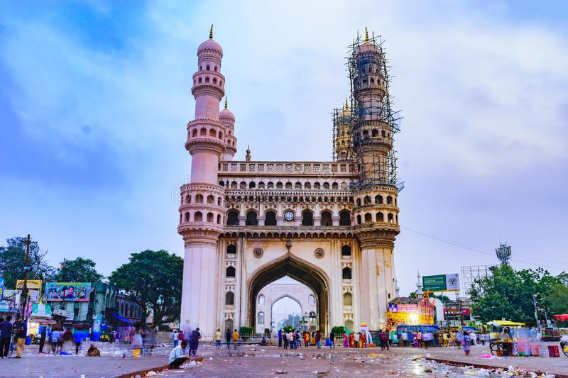

PLACES

Charminar
Charminar was built to acknowledge the elimination of the plague which had affected the entire city immensely during that era. It is believed that the Sultan had prayed for the end of this plague with which his people were suffering.

Taj Mahal
'Crown of the Palace' is an Islamic ivory-white marble mausoleum on
the right bank of the river Yamuna in the Indian city of Agra.
It was commissioned in 1631 by the Mughal emperor Shah Jahan
( r. 1628–1658) to house the tomb of his favourite wife, Mumtaz Mahal;
it also houses the tomb of Shah Jahan himself.

Lotus Temple
While worship forms a key tenet of the House of Worship,
service to humanity is considered an outward expression of the inner
transformation that worship brings about. This service is expressed through
deeds carried out in the spirit of service for the betterment of humanity;
communal worship in homes, neighborhoods and villages; an educational process
that builds the capacity of individuals to serve others; and, through a pattern
of community life embodying the principle of the oneness of humanity.